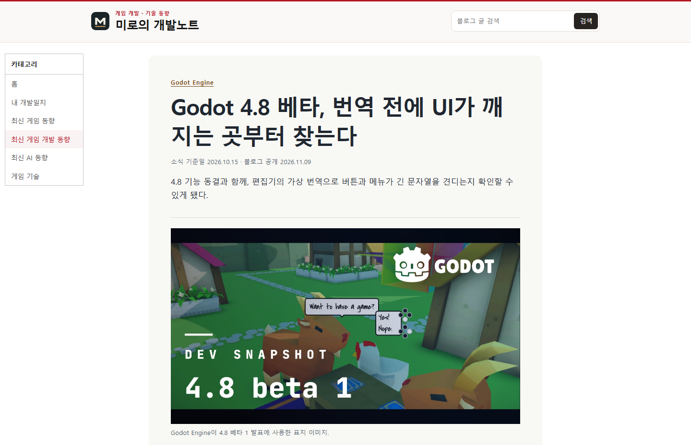
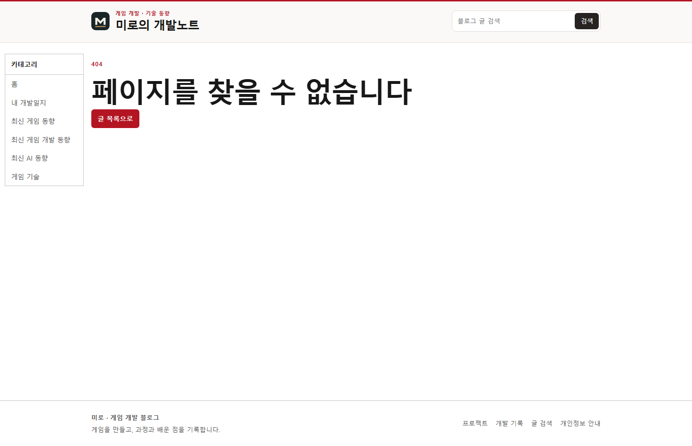
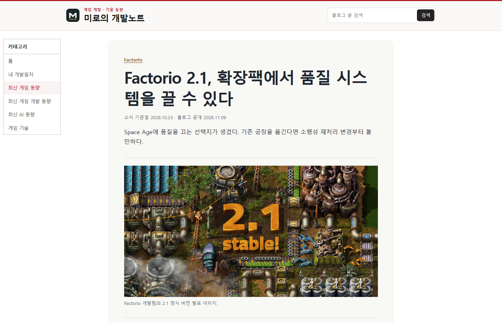
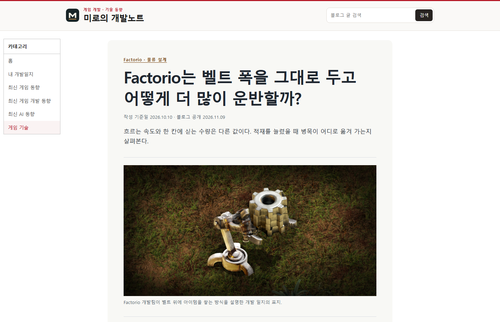

Tracefolio REPORTS & ISSUES
Tracefolio REPORTS & ISSUES문문동준 개발 블로그수정사항
블로그 본문 분량 기준 정정과 월간 보강 1차 결과
검증 대기본문 1,500자를 유연한 작성 목표로 정정하고 공식 썸네일을 붙인 글 3편의 공개 결과를 기록했습니다.
작업 결과
본문 길이는 주제에 따라 조절합니다. 빌드에서 길이 검사와 경고를 제거했습니다. 공식 자료를 바탕으로 쓴 글 3편은 운영에서 본문과 이미지까지 확인했습니다.
변경 내용
적용 내용
대화 기록
- 사용자(시각 미기록) — 한 달 동안 각 게시판에 하루 한 편과 관련 썸네일을 요청하고 1,500자 초과 시 중단되는 이유를 질문했습니다.
- AI(시각 미기록) — 기존 빌드 중단을 경고로 바꾸고, 배포를 확인한 3편과 미완료 범위를 보고했습니다. 중앙 아카이브 보고서 게시와 공개 확인을 누락했습니다.
- 사용자(시각 미기록) — “1500자 내외로 넓게 작성하라는거고”라고 기준을 정정하고, 보고서 누락과 지연 원인 확인을 요청했습니다.
검증
이전 회차에서 1,501자 원고가 페이지로 생성되는 것을 확인했습니다. 이번 회차에는 길이 검사 자체를 제거한 소스의 빌드가 성공했고, 예약 발행 지침 수정이 저장됐습니다. 앞선 운영 배포에서 세 글에 이미지 캡션이 존재하고 썸네일은 각각 HTTP 200으로 응답했습니다.






남은 사항
10월 10일~11월 8일 중 글이 있는 날짜는 게임 기술 1일, 게임 동향 5일, 게임 개발 동향 11일, AI 동향 5일, 편집한 개발일지 9일입니다. 월간 빈 날짜와 기존 글의 누락 썸네일 보강은 미완료입니다. 빌드 조건 변경은 화면 디자인 변경이 없습니다. 전역 지침을 변경하지 않았습니다.
작업 시간
- 제안 시간: 이전 빌드 수정과 운영 확인 2
4분. 이번 지침 정정과 보고서 공개 58분 예상. - 실제로 완료된 시간: 이전 글 3편 운영 확인은 2026-11-09 19:48:30 KST에 완료했습니다. 이번 회차는 19:57:14 KST에 실행 기록을 시작했고, 2026-11-09 19:59:12 KST에 보고서를 생성했습니다. 공개 확인 시각은 최종 답변에 기록합니다.
- XERJ: 미사용 — rg로 글자 수 규칙과 예약 발행 설정을 확인했습니다.